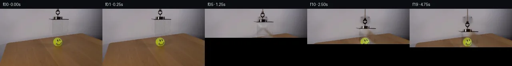

![首帧]()

Round 00
2026-11-05T02:11:18.543207+00:00像素候选变化代码 +244/−0inspection 更新
pixels 1b8c670fc76e528a · code 135b288cd29cdecc
查看本轮 generate.py 真实 diff
--- previous/generate.py
+++ current/generate.py
@@ -0,0 +1,244 @@
+#!/usr/bin/env python3
+"""Generate a 20-frame pixel animation of the acrylic cover lowering.
+
+Only local source pixels, OpenCV image operations, and analytic shading are used.
+"""
+
+from pathlib import Path
+
+import cv2
+import numpy as np
+from PIL import Image, ImageDraw, ImageFont
+
+import artifact_io
+
+
+ROOT = Path(__file__).resolve().parent
+SOURCE = np.asarray(Image.open(ROOT / "first_frame.png").convert("RGB"), dtype=np.uint8)
+H, W = SOURCE.shape[:2]
+
+
+def smoothstep(lo: float, hi: float, value: float) -> float:
+ value = np.clip((value - lo) / (hi - lo), 0.0, 1.0)
+ return float(value * value * (3.0 - 2.0 * value))
+
+
+def reconstruct_background(source: np.ndarray) -> np.ndarray:
+ """Inpaint only the original hanging apparatus and its transparent body."""
+ mask = np.zeros((H, W), np.uint8)
+
+ # Cord/ring/connector.
+ cv2.rectangle(mask, (137, 0), (153, 25), 255, -1)
+ # Dark top rim and the clear box body. The box is entirely against the wall
+ # at its initial height, so inpainting does not erase the ball or tabletop.
+ cv2.rectangle(mask, (120, 22), (172, 31), 255, -1)
+ cv2.rectangle(mask, (121, 28), (170, 67), 255, -1)
+
+ clean = cv2.inpaint(cv2.cvtColor(source, cv2.COLOR_RGB2BGR), mask, 5, cv2.INPAINT_TELEA)
+ clean = cv2.cvtColor(clean, cv2.COLOR_BGR2RGB)
+
+ # Make the broad, textureless wall reconstruction continuous across the
+ # narrow masked area while preserving natural source noise and vignetting.
+ # A low-opacity horizontal interpolation suppresses any inpaint halo.
+ for y in range(0, 67):
+ xl, xr = 116, 176
+ left = clean[y, xl].astype(np.float32)
+ right = clean[y, xr].astype(np.float32)
+ for x in range(120, 173):
+ q = (x - xl) / (xr - xl)
+ interp = left * (1.0 - q) + right * q
+ clean[y, x] = np.clip(0.65 * clean[y, x] + 0.35 * interp, 0, 255)
+ return clean.astype(np.uint8)
+
+
+def apparatus_residual(source: np.ndarray, clean: np.ndarray) -> tuple[np.ndarray, np.ndarray]:
+ """Extract a soft residual/matte for the real source apparatus."""
+ residual = source.astype(np.float32) - clean.astype(np.float32)
+ magnitude = np.max(np.abs(residual), axis=2)
+ support = np.zeros((H, W), np.float32)
+ support[0:68, 118:174] = 1.0
+
+ # Small deviations are source grain; real acrylic edges begin around 2 DN.
+ alpha = np.clip((magnitude - 1.5) / 8.0, 0.0, 1.0) * support
+
+ # Protect the true dark mechanism and top bar even where antialiasing is soft.
+ hard = np.zeros((H, W), np.float32)
+ hard[0:27, 136:155] = 1.0
+ hard[22:31, 119:174] = 1.0
+ darkness = np.clip((110.0 - np.mean(source, axis=2)) / 70.0, 0.0, 1.0)
+ alpha = np.maximum(alpha, hard * darkness)
+ alpha = cv2.GaussianBlur(alpha, (3, 3), 0.45)
+ return residual, np.clip(alpha, 0.0, 1.0)
+
+
+def warp_layer(layer: np.ndarray, dy: float, interpolation: int) -> np.ndarray:
+ matrix = np.float32([[1.0, 0.0, 0.0], [0.0, 1.0, dy]])
+ return cv2.warpAffine(
+ layer,
+ matrix,
+ (W, H),
+ flags=interpolation,
+ borderMode=cv2.BORDER_CONSTANT,
+ borderValue=0,
+ )
+
+
+def alpha_blend(frame: np.ndarray, color: np.ndarray, alpha: np.ndarray) -> np.ndarray:
+ a = alpha[..., None].astype(np.float32)
… diff truncated; 157 more lines …